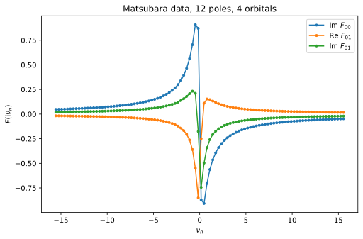
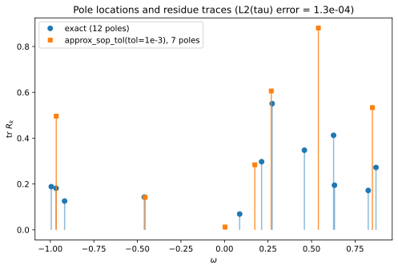
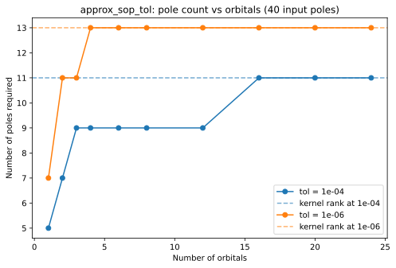

Pole approximation of multi-orbital data with a discrete spectrum
In this example we consider a matrix-valued (multi-orbital) Matsubara function with a discrete spectrum: a sum of \(K\) delta functions at random locations \(p_k \in [-1, 1]\), with random rank-one (bath-site-like) residues,
with the \(p_k\) and \(v_k\) drawn from a fixed random seed. Since the exact function is itself a sum of simple poles, the accuracy of any fit can be measured exactly. Note that the goal is not to recover the input poles: at a given target accuracy the fitting routines are free to use fewer — and differently placed — poles than the input, and for a compact representation that is exactly what one wants.
We briefly demonstrate the three main adapol functions with fixed, representative parameter choices — see the semicircle example for a more detailed exploration of the stopping criteria, the nonlinear_optimization switch, and the error metric. We then run a small experiment: using approx_sop_tol, we measure how many poles are actually required to reach a given accuracy as the number of orbitals grows.
[2]:
import time
import numpy as np
import scipy.linalg
import matplotlib.pyplot as plt
from adapol import approx_freq_aaa, approx_sop_fast, approx_sop_tol
np.set_printoptions(precision=3, suppress=True)
beta = 20.0
# Fermionic Matsubara sampling grid Z_n = i(2n+1)*pi/beta, symmetric about zero
nmax = 50
Z = 1j * (2 * np.arange(-nmax, nmax) + 1) * np.pi / beta
def make_random_model(n_orb, n_delta, seed_res):
"""Random discrete model: n_delta poles uniform on [-1,1] (fixed seed), rank-one
residues v_k v_k^dag with complex Gaussian v_k, normalized so tr F ~ O(1)."""
rng_poles = np.random.default_rng(0)
rng_res = np.random.default_rng(seed_res)
poles = np.sort(rng_poles.uniform(-1, 1, n_delta))
v = (rng_res.standard_normal((n_delta, n_orb))
+ 1j * rng_res.standard_normal((n_delta, n_orb))) / np.sqrt(2 * n_delta)
residues = np.einsum('ki,kj->kij', v, v.conj())
return poles, residues
def eval_sop(z, poles, residues):
"""Evaluate the sum of simple poles sum_k residues[k] / (z - poles[k]) at points z."""
C = 1.0 / (z[:, None] - poles[None, :])
return np.einsum('zp,p...->z...', C, residues)
n_orb, n_delta = 4, 12
poles_ex, res_ex = make_random_model(n_orb, n_delta, seed_res=1)
F = eval_sop(Z, poles_ex, res_ex)
print(f"model: {n_delta} poles, {n_orb} orbitals, data shape {F.shape}")
print(f"pole locations: {poles_ex}")
model: 12 poles, 4 orbitals, data shape (100, 4, 4)
pole locations: [-0.995 -0.967 -0.918 -0.46 0.087 0.213 0.274 0.459 0.627 0.632
0.826 0.87 ]
We plot a couple of matrix elements of the data.
[3]:
plt.plot(Z.imag, F[:, 0, 0].imag, 'o-', markersize=3, label=r'Im $F_{00}$')
plt.plot(Z.imag, F[:, 0, 1].real, 'o-', markersize=3, label=r'Re $F_{01}$')
plt.plot(Z.imag, F[:, 0, 1].imag, 'o-', markersize=3, label=r'Im $F_{01}$')
plt.xlabel(r'$\nu_n$')
plt.ylabel(r'$F(\mathrm{i}\nu_n)$')
plt.legend()
plt.title(f'Matsubara data, {n_delta} poles, {n_orb} orbitals')
plt.show()

We measure fit quality by the normalized imaginary-time \(L^2\) error, with the Frobenius norm over the orbital indices,
which is the same norm approx_sop_fast and approx_sop_tol report. Since the exact function is a known sum of poles, we can evaluate it in imaginary time analytically and compute the error by Gauss–Legendre quadrature (see the semicircle example):
[4]:
def K_tau(tau, omega):
"""Imaginary-time kernel K(tau, omega) = -exp(-tau*omega) / (1 + exp(-beta*omega)),
evaluated in a numerically stable way for both signs of omega."""
K = np.empty((len(tau), len(omega)))
p = omega > 0
m = ~p
t = tau[:, None]
K[:, p] = -np.exp(-t * omega[p]) / (1 + np.exp(-beta * omega[p]))
K[:, m] = -np.exp((beta - t) * omega[m]) / (1 + np.exp(beta * omega[m]))
return K
x_gl, w_gl = np.polynomial.legendre.leggauss(200)
tau_q = 0.5 * beta * (x_gl + 1)
w_q = 0.5 * beta * w_gl
F_tau = np.einsum('tp,pij->tij', K_tau(tau_q, poles_ex), res_ex)
def l2tau_error(poles, residues):
"""Normalized Frobenius L2(tau) error of a sum of simple poles vs the exact model."""
fit_tau = np.einsum('tp,p...->t...', K_tau(tau_q, poles), residues)
d2 = np.abs(fit_tau - F_tau) ** 2
return np.sqrt(np.sum(w_q * d2.reshape(len(tau_q), -1).sum(axis=1)) / beta)
print(f"||F||_L2(tau) = {np.sqrt(np.einsum('t,tij->', w_q, np.abs(F_tau)**2) / beta):.4f}")
||F||_L2(tau) = 0.3440
Fitting the Matsubara data: approx_freq_aaa
approx_freq_aaa fits the raw frequency data \((F, Z)\); matrix-valued data of shape (N, n_orb, n_orb) is supported directly, and a single set of poles is found for all matrix elements at once. We try a few representative settings. At a moderate tolerance the data — generated by 12 poles — is fit with fewer poles: 9 suffice for \(\sim 10^{-6}\) accuracy. A pole budget max_n_poles instead caps the cost directly. The fitted residue matrices come out numerically Hermitian.
[5]:
for kwargs in [dict(aaa_tol=1e-4),
dict(max_n_poles=8),
dict(aaa_tol=1e-10)]:
p, r, err = approx_freq_aaa(F, Z, **kwargs)
opts = ', '.join(f'{k}={v}' for k, v in kwargs.items())
print(f"{opts:20s} -> {len(p):2d} poles, error at samples = {err:.1e}, "
f"L2(tau) error = {l2tau_error(p, r):.1e}")
aaa_tol=0.0001 -> 9 poles, error at samples = 4.2e-06, L2(tau) error = 1.5e-06
max_n_poles=8 -> 7 poles, error at samples = 5.7e-04, L2(tau) error = 1.3e-04
aaa_tol=1e-10 -> 13 poles, error at samples = 1.1e-15, L2(tau) error = 2.4e-16
Compressing the exact expansion: approx_sop_fast
The two SOP routines take the exact poles and residues as input directly. approx_sop_fast makes a single AAA pass (with the residues refit in imaginary time), controlled by aaa_tol and/or max_n_poles; nonlinear_optimization=True additionally refines the pole locations, though here the AAA poles are already essentially optimal and it adds only cost:
[6]:
for kwargs in [dict(aaa_tol=1e-4),
dict(max_n_poles=8),
dict(max_n_poles=8, nonlinear_optimization=True)]:
t0 = time.perf_counter()
p, r, err = approx_sop_fast(poles_ex, res_ex, beta, **kwargs)
dt = (time.perf_counter() - t0) * 1e3
opts = ', '.join(f'{k}={v}' for k, v in kwargs.items())
print(f"{opts:45s} -> {len(p):2d} poles, L2(tau) error = {err:.1e}, t = {dt:5.1f} ms")
aaa_tol=0.0001 -> 9 poles, L2(tau) error = 1.5e-06, t = 8.9 ms
max_n_poles=8 -> 7 poles, L2(tau) error = 1.3e-04, t = 5.3 ms
max_n_poles=8, nonlinear_optimization=True -> 7 poles, L2(tau) error = 1.3e-04, t = 8.9 ms
Compression to a prescribed accuracy: approx_sop_tol
approx_sop_tol finds the smallest expansion whose final \(L^2(\tau)\) error is below tol — so the tolerance directly controls the pole count. Only near roundoff does the required count approach that of the input:
[7]:
for tol in [1e-3, 1e-6, 1e-10]:
p, r, err = approx_sop_tol(poles_ex, res_ex, tol=tol, beta=beta, verbose=False)
print(f"tol = {tol:.0e} -> {len(p):2d} poles, L2(tau) error = {err:.1e}")
tol = 1e-03 -> 7 poles, L2(tau) error = 1.3e-04
tol = 1e-06 -> 11 poles, L2(tau) error = 5.1e-09
tol = 1e-10 -> 13 poles, L2(tau) error = 3.6e-16
The compressed poles are not simply a subset of the input poles — they are placed wherever the requested accuracy demands. At tol = 1e-3, seven poles reproduce the 12-pole function: the cluster of three input poles near \(\omega \approx -0.95\) is replaced by a single pole carrying their combined spectral weight (residue trace \(0.50 \approx 0.19 + 0.18 + 0.13\)), the near-degenerate pair at \(\omega \approx 0.63\) is likewise merged, and the remaining poles shift away from
their input locations — yet the function is reproduced to the requested accuracy:
[8]:
p7, r7, err7 = approx_sop_tol(poles_ex, res_ex, tol=1e-3, beta=beta, verbose=False)
idx = np.argsort(p7)
p7s, tr7 = p7[idx], np.einsum('kii->k', r7[idx]).real
tr_ex = np.einsum('kii->k', res_ex).real
plt.vlines(poles_ex, 0, tr_ex, color='C0', alpha=0.5)
plt.plot(poles_ex, tr_ex, 'C0o', label=f'exact ({n_delta} poles)')
plt.vlines(p7s, 0, tr7, color='C1', alpha=0.8)
plt.plot(p7s, tr7, 'C1s', markersize=5, label=f'approx_sop_tol(tol=1e-3), {len(p7s)} poles')
plt.xlabel(r'$\omega$')
plt.ylabel(r'tr $R_k$')
plt.legend()
plt.title(f'Pole locations and residue traces (L2(tau) error = {err7:.1e})')
plt.show()

How does the required number of poles vary with the number of orbitals?
To test this, we fix \(K = 40\) delta functions (same random locations throughout) and draw independent random residue vectors for increasing \(n_{\mathrm{orb}}\), then ask approx_sop_tol for the minimal pole count at fixed tolerances.
For a single orbital, many of the 40 poles can be merged. As \(n_{\mathrm{orb}}\) grows, the data contains more independent linear combinations of the poles and the required count increases — but it quickly saturates, far below 40. The saturation level is the numerical \(\epsilon\)-rank of the Matsubara kernel \(1/(\mathrm{i}\nu_n - \omega)\) on \(\omega \in [-1,1]\) (dashed lines, computed with the pivoted-QR construction from the semicircle example): a universal pole set
of that size can represent any function with this spectral support to accuracy \(\epsilon\), no matter how many orbitals. This is the concept underlying the discrete Lehmann representation [1]: in the limit of a large number of orbitals, the required pole count is set by the spectral support and the target accuracy — not by the number of orbitals (nor by the \(n_{\mathrm{orb}}^2\) matrix elements, nor the 40 input poles).
[9]:
n_delta_sweep = 40
tols = [1e-4, 1e-6]
n_orbs = [1, 2, 3, 4, 6, 8, 12, 16, 20, 24]
counts = {}
for tol in tols:
counts[tol] = []
for no in n_orbs:
poles_s, res_s = make_random_model(no, n_delta_sweep, seed_res=100 + no)
p, r, err = approx_sop_tol(poles_s, res_s, tol=tol, beta=beta, verbose=False)
counts[tol].append(len(p))
print(f"tol = {tol:.0e}: n_orb = {n_orbs} -> poles = {counts[tol]}")
# epsilon-rank of the continuum Matsubara kernel on [-1, 1] (cf. the semicircle example)
Z_dense = 1j * (2 * np.arange(-200, 200) + 1) * np.pi / beta
om_cand = np.linspace(-1, 1, 501)
_, R, _ = scipy.linalg.qr(1.0 / (Z_dense[:, None] - om_cand[None, :]),
mode='economic', pivoting=True)
diagR = np.abs(np.diag(R))
ranks = {tol: int(np.sum(diagR > tol * diagR[0])) for tol in tols}
print(f"kernel epsilon-ranks: {ranks}")
for i, tol in enumerate(tols):
plt.plot(n_orbs, counts[tol], f'C{i}o-', label=f'tol = {tol:.0e}')
plt.axhline(ranks[tol], color=f'C{i}', linestyle='--', alpha=0.6,
label=f'kernel rank at {tol:.0e}')
plt.xlabel('Number of orbitals')
plt.ylabel('Number of poles required')
plt.legend()
plt.title(f'approx_sop_tol: pole count vs orbitals ({n_delta_sweep} input poles)')
plt.show()
tol = 1e-04: n_orb = [1, 2, 3, 4, 6, 8, 12, 16, 20, 24] -> poles = [5, 7, 9, 9, 9, 9, 9, 11, 11, 11]
tol = 1e-06: n_orb = [1, 2, 3, 4, 6, 8, 12, 16, 20, 24] -> poles = [7, 11, 11, 13, 13, 13, 13, 13, 13, 13]
kernel epsilon-ranks: {0.0001: 11, 1e-06: 13}

References
[1] J. Kaye, K. Chen, and O. Parcollet, Discrete Lehmann representation of imaginary time Green’s functions, Phys. Rev. B 105, 235115 (2022).